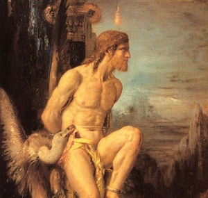

Sacred Texts
Bible
Bible Critical Views
Buy this Book at Amazon.com

Prometheus, (Detail) by Gustave Moreau [19th cent.] (Public Domain Image) |
Pagan Christs
by John M. Robertson
[1911]
|
Contents
Start Reading
Page Index
Text [Zipped]
...you take the blue pill--the story ends...you take the red pill...and I show you how deep the rabbit hole goes.--Morpheus in The Matrix
Talk about your red pills.
J.M. Robertson herein challenges not only the historical authenticity
of the canonical accounts of the founding of Christianity,
but also Buddhism, Hinduism, Jainism, Zoroastrianism, and Judaism.
He answers the question implicit in Kersey Graves' 1875 screed,
The World's Sixteen Crucified Saviors.
Why so many similar stories of savior figures in world religion?
At the dark heart of this mystery, according to Robinson,
is a prehistoric drama involving human sacrifice (particularly, of children),
cannibalism, and regicide.
The purpose: to implore the gods, or to expiate collective sin.
As time passed, the rituals were softened, and turned into
symbolic equivalents (such as the scapegoat and the eucharist),
while retaining the tragic end of the narrative.
A culture hero, born under portents,
dies, often under torture, in order to save all humanity.
These and other tropes ended up embedded in our tales of the founders
of major religions, from Buddha to Jesus.
Robertson pulls in historic, ethnographic and folklore data
from hundreds of carefully cited sources.
He covers examples from antiquity such as Mithraism, Manichaeism,
and Apollonius of Tyana.
In the final section he universalizes his study and
focuses on Native America, particularly the Aztec.
The conclusions of this book remain highly controversial, but
the sheer mass of evidence accumulated demands consideration.
This will be a thorny book for believers, but a revelation for
free-thinkers.
--J.B. Hare, Feb. 10, 2008.
Title Page
By the Same Author
Contents
Preface to the Second Edition
Introduction
Part I. The Rationale of Religion
Chapter I. The Naturalness of all Belief
§ 1. Origin of the Gods from Fear
§ 2. All Belief Results of Reasoning
§ 3. Dr. Jevons’ Theories of Religious Evolution
§ 4. Scientific View of the Religious Evolution
§ 5. Dr. Frazer's Definition
§ 6. The Scientific Induction
§ 7. Dr. Jevons’ Series of Self-Contradictions
§ 8. His Contradictory Doctrine of the Conditions of the Survival of Religion
§ 9. The Continuity of Religious Phenomena
§ 10. Dr. Frazer's Sociological Vindication of the Sorcerer
§ 11. The Beginning of the End of Religion
§ 12. Historic View of Ancestor Worship
§ 13. The Authoritarian Element a Mark of Religion
§ 14. Definition of Religion
Chapter II. Comparison and Appraisement of Religions
§ 1. Early Forces of Reform
§ 2. Reform as a Religious Process
§ 3. Polytheism and Monotheism
§ 4. Hebrews and Babylonians
§ 5. Forces of Religious Evolution
§ 6. The Hebrew Evolution
§ 7. Post-Exilic Phases
§ 8. Revival and Disintegration
§ 9. Conclusion
Part II. Secondary God-Making
Chapter I. The Sacrificed Saviour-God
§ 1. Totemism and Sacraments
§ 2. Theory and Ritual of Human Sacrifice
§ 3. The Christian Crucifixion
§ 4. Vogue of Human Sacrifice
§ 5. The Divinity of the Victim
§ 6. The Cannibal Sacrament
§ 7. The Semitic Antecedents
§ 8. The Judaic Evolution
§ 9. Specific Survivals in Judaism
§ 10. The Pre-Christian Jesus-God
§ 11. Private Jewish Eucharists
§ 12. The Eucharist in Orthodox Judaism
§ 13. Special Features of the Crucifixion Myth
§ 14. Possible Historical Elements
§ 15. The Gospel Mystery-Play
§ 16. The Mystery-Play and the Cultus
§ 17. Further Pagan Adaptations
§ 18. Synopsis and Conclusion: Genealogy of Human Sacrifice and Sacrament
Chapter II. The Teaching God
§ 1. Primary and Secondary Ideas
§ 2. The Logos
§ 3. Derivations of the Christian Logos
§ 4. The Search for a Historical Jesus
§ 5. The Critical Problem
§ 6. Collapse of the Constructive Case
§ 7. Parallel Problems
§ 8. The Problem of Buddhist Origins
§ 9. Buddhism and Buddhas
§ 10. The Buddhist Cruces
§ 11. Sociological Clues
§ 12. Buddhism and Asoka
§ 13. The Buddha Myth
§ 14. The Problem of Manichæus
§ 15. The Manichean Solution
§ 16. The Case of Apollonius of Tyana
Part III. Mithraism
§ 1. Introductory
§ 2. Beginnings of Cult
§ 3. Zoroastrianism
§ 4. Evolution of Mithra
§ 5. The Process of Syncretism
§ 6. Symbols of Mithra
§ 7. The Cultus
§ 8. The Creed
§ 9. Mithraism and Christianity
§ 10. Further Christian Parallels
§ 11. The Vogue of Mithraism
§ 12. Absorption in Christianity
§ 13. The Point of Junction
Part IV. The Religions of Ancient America
§ 1. American Racial Origins
§ 2. Aztecs and Peruvians
§ 3. Primitive Religion and Human Sacrifice
§ 4. The Mexican Cultus
§ 5. Mexican Sacrifices and Cannibal Sacraments
§ 6. Mexican Ethics
§ 7. The Mexican White Christ
§ 8. The Fatality of the Priesthood
§ 9. The Religion of Peru
§ 10. Conclusion
Appendices
Appendix A. The Eating of the Crucified Human Sacrifice
Appendix B. Dramatic and Ritual Survivals
Appendix C. Replies to Criticisms
Index